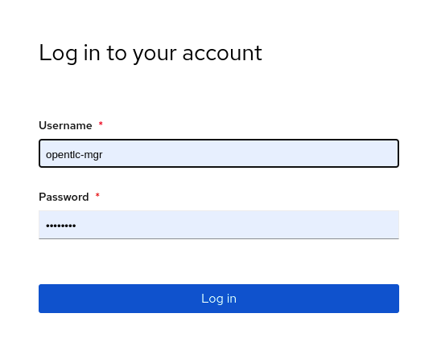
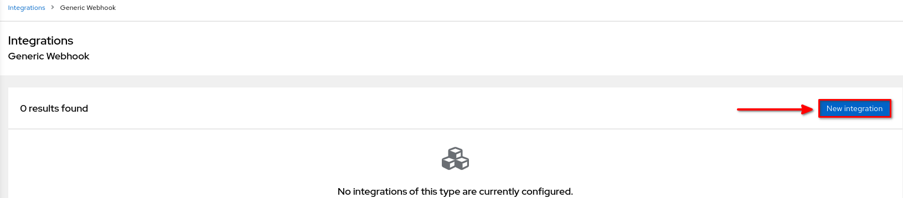
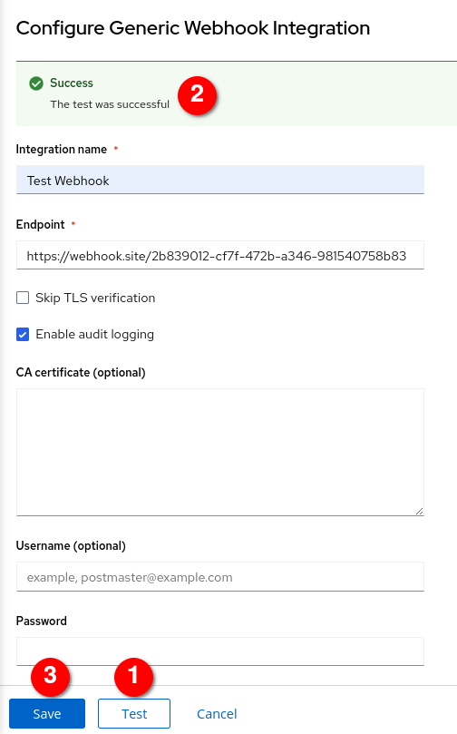

Integrations
| In RHACS the Scanner component only scans those images that are not already scanned by other integrated vulnerability scanners. It means that if you have integrated Red Hat Advanced Cluster Security for Kubernetes with other vulnerability scanners, Scanner checks and uses the scanning results from the integrated scanner if available. |
Integrate ACS with OpenShift OAuth
Red Hat Advanced Cluster Security (RHACS) Central is installed with one administrator user by default. Typically, customers request an integration with existing Identity Provider(s) (IDP).
RHACS offers different options for such integration. In this section we will see the integration with OpenShift OAuth.
| It is assumed that RHACS is already installed and login to the Central UI is available. |
-
Login to your RHACS and select “Platform Configuration” > “Access Control”

-
From the drop down menu Add auth provider select OpenShift Auth

-
Enter a Name for your provider and select a default role which is assigned to any user who can authenticate. It is recommended to select the role None, so new accounts will have no privileges in RHACS. With Rules you can assign roles to specific users, based on their userid, name, mail address or groups. For example the user with the name admin gets the role Admin assigned. On the other hand the user1 will have the role of Read-Only Analyst.

-
After Save the integration will appear as Auth Provider

-
In a private windows of your browser login into the RH ACS portal, and check the OpenShift OAuth auth provider that you set up

-
Login first with the opentlc-mgr user
 -
opentlc-mgr user will have the role Admin in RH ACS, so will have full privileges in the ACS console. Check that you have full view of the Violations or Compliance among others.

-
Logout and login again but this time with the user user1 instead

-
This user have read-only privileges and for example cannot edit the Policy or etc in the cluster

Integrate ACS with Webhook for Audit
With Red Hat Advanced Cluster Security for Kubernetes, you can send alert notifications as JSON messages to any webhook receiver. When a violation occurs, Red Hat Advanced Cluster Security for Kubernetes makes an HTTP POST request on the configured URL. The POST request body includes JSON-formatted information about the alert.
The webhook POST request’s JSON data includes a v1.Alert object and any custom fields that you configure, as shown in the following example:
{
"alert": {
"id": "<id>",
"time": "<timestamp>",
"policy": {
"name": "<name>",
...
},
...
},
"<custom_field_1>": "<custom_value_1>"
}In this section, we will integrate example webhook for audit logs.
-
Firsty, login the
webhook.siteon your private browser. Copy your unique URL. We will use this URL next step.
-
On the RHACS portal, navigate to Platform Configuration → Integrations. Click
Generic Webhook
-
Click New Integration (add icon).
 -
Enter a
Test Webhookfor Integration Name and Enter the webhook URL(you copied URL before) in the Endpoint field. -
Turn on the Enable Audit Logging toggle, to receive alerts about all the changes made in Red Hat Advanced Cluster Security for Kubernetes.
-
Click
Test